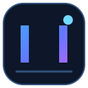

⌕
AVD discovery
Find Android Virtual Devices already configured in your Android SDK.

AZUL NEXOne PC. Infinite Devices.
A modern Windows control center for Android virtual devices. Manage emulator sessions, discover AVDs, and use essential ADB controls from one focused workspace.
AZUL NEX is being built around practical emulator management, with a clear line between what works now and what is still on the roadmap.
Find Android Virtual Devices already configured in your Android SDK.
Request an emulator launch and refresh the list of ADB-connected instances.
Send Back, Home, and Recent navigation events to a selected emulator.
Choose an APK and install it on a running emulator through ADB.
Browse starter screen-size references for common phone and tablet layouts.
Device creation, adaptive input mapping, and multi-instance workflows are planned.
Features are being implemented and verified. No stable release or guaranteed installer is advertised yet.
AZUL NEX currently manages the official Android Emulator and ADB installed on your PC. Those components and an AVD must be set up separately.
Set up Android SDK Platform-Tools, Android Emulator, and create an AVD in Android Studio Device Manager.
Get the source from GitHub and install the .NET 8 SDK to build the Windows app.
Run the WPF project and point ANDROID_SDK_ROOT to your SDK folder if automatic detection misses it.